Referral source management for health care marketers
Small steps create big success.
RepSteps is the field CRM built for the way liaisons work: check in with a tap, let the miles add up on their own, and watch every referral move toward admission.
- GPS check-ins
- Automatic mileage
- Referral tracking
- Live goals
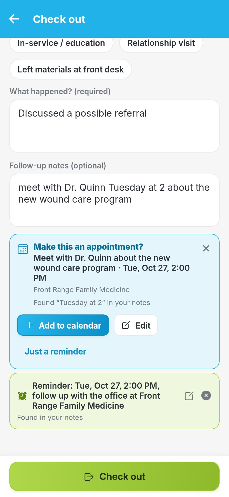
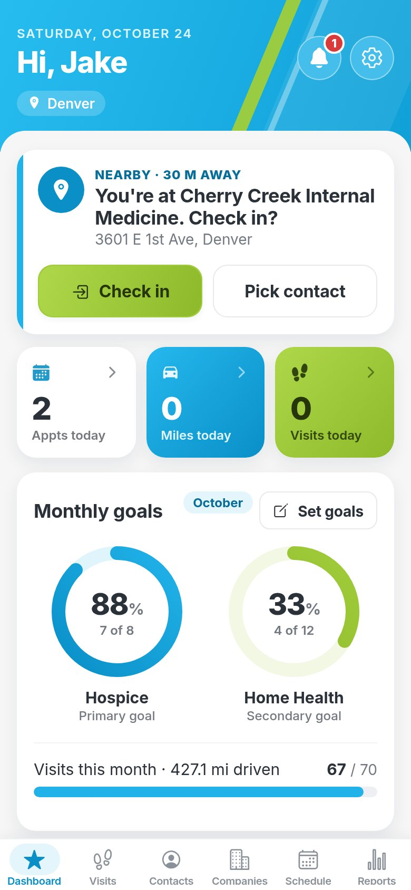
One app for the whole referral team
Reps get a fast tool for the road. Managers get the numbers. Payroll gets the miles.
Marketers and liaisons
Home health and hospice reps out visiting physician offices, hospitals, SNFs and assisted living.
- Check in and out in seconds
- Notes, contacts and history on every account
- Follow-ups that don't get lost
Marketing directors and managers
Leaders who run weekly meetings and need to see where referrals come from.
- Team goals and progress, live
- Referrals, admits and conversion by rep
- Reports by account, territory or week
Administrators and payroll
The people who set up the agency and close out each pay period.
- Users, territories and roles
- A payroll login that sees mileage only
- Printable, signable mileage reports
Four small steps, all day long
No end-of-day data entry. The work gets logged as it happens.
Pull up and check in
RepSteps sees you're at Front Range Family Medicine and offers to check you in. New spot? Add it right there.
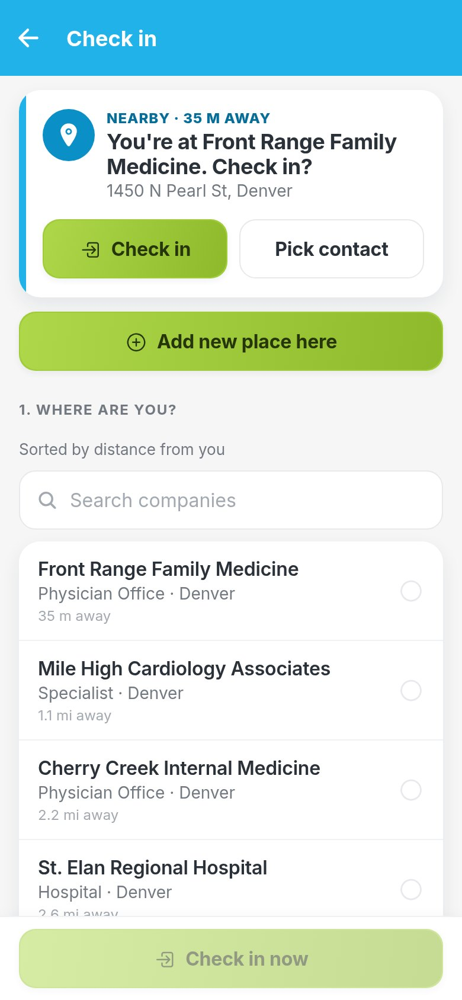
Check out with notes
Pick who you saw and what happened. Mention a day and time and RepSteps suggests the appointment.
Move referrals along
Log a referral in seconds and move it from Referred to Contacted to Admitted, with notes for the team.
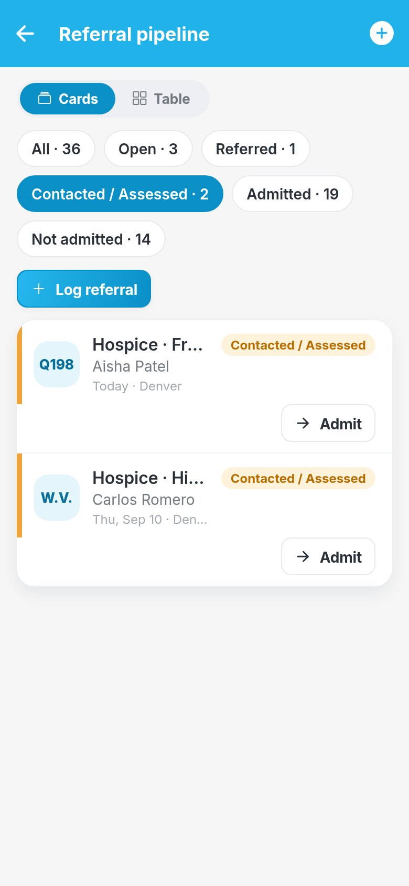
Miles count themselves
Every leg of the day is logged with miles and dollars, ready for the end of the pay period.
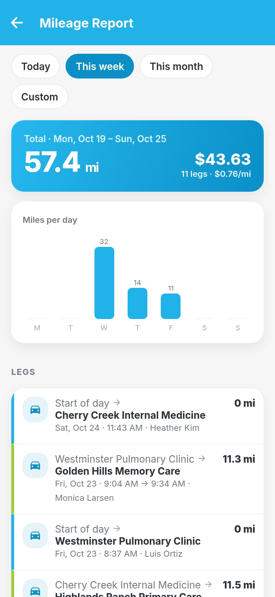
Everything a field team needs, in one place
The original RepSteps essentials, rebuilt from the ground up, plus a lot of new ones.
GPS check-in and check-out
One tap logs who you saw, why, and how long. RepSteps fills in the street address and suggests the place you're parked at.
Automatic mileage
Miles add up from stop to stop and are priced at your agency's mileage rate.
Payroll mileage reportsNEW
Pay-period mileage for every rep, printable with signature lines or exported to CSV.
Referral trackingNEW
Follow every referral from Referred to Admitted, with conversion rates and status notes along the way.
Contacts and visit history
Every account, contact and past visit in one place, so you can pick up the conversation where you left off.
Call loggingNEW
Log calls with the outcome and notes, right on the contact you spoke to.
Gifts and mealsNEW
Track what was spent per contact and account, with a caution line your agency sets.
Community eventsNEW
Plan in-services and community events on the schedule and see them in reports.
Facility sizeNEW
Beds, average census and payer mix on every facility you call on.
Reminders bellNEW
A red badge counts today's follow-ups. One tap takes you straight to them.
Appointment suggestionsNEW
Write "meet Tuesday at 2" in your notes and RepSteps offers to put it on the calendar.
Calendar syncNEW
Appointments flow into Apple, Google or Outlook calendars, or add them one tap at a time.
Live goals and team board
Monthly hospice and home health goals as live progress rings, and a team view of everyone's numbers.
Manager reports
Visits, referrals, admits, calls, miles, gifts and events by rep, account, territory or week.
Multi-agency adminNEW
Agencies, users, territories and referral types, with rep, manager, payroll and admin roles.
Phone and web
An Android app for the road and the full site in any browser for the office.
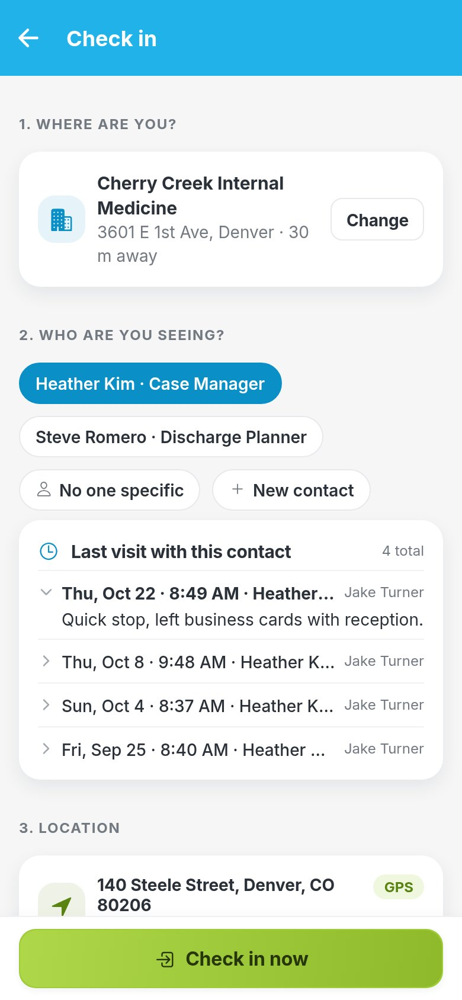
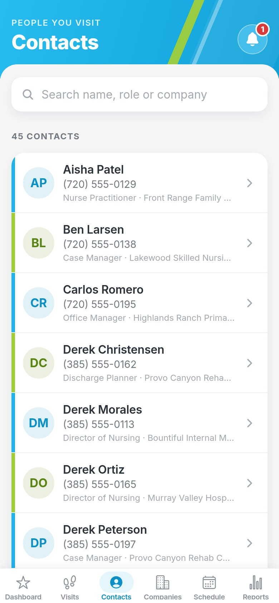
Every visit, logged in the right place
Check-ins are backed by GPS and show the real street address, so visit time and mileage take care of themselves.
- Nearby suggestions. RepSteps recognizes the facility you're at and offers the check-in.
- Last visit at a glance. See what happened the last few times before you walk in.
- Contacts on every account. Case managers, discharge planners and physicians, with phone numbers.
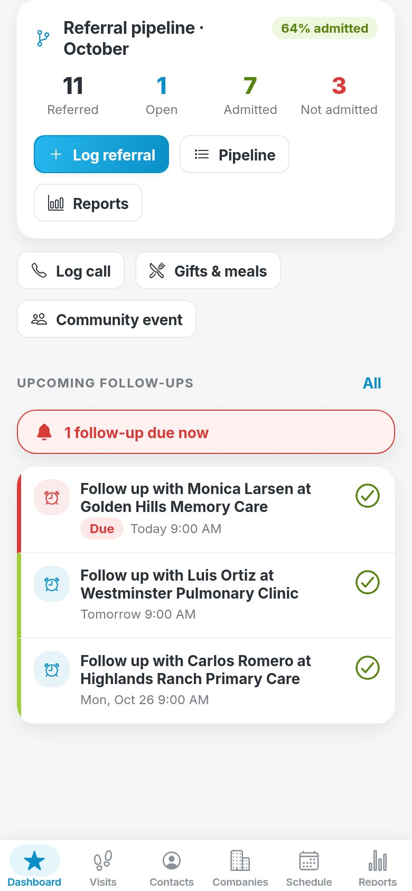
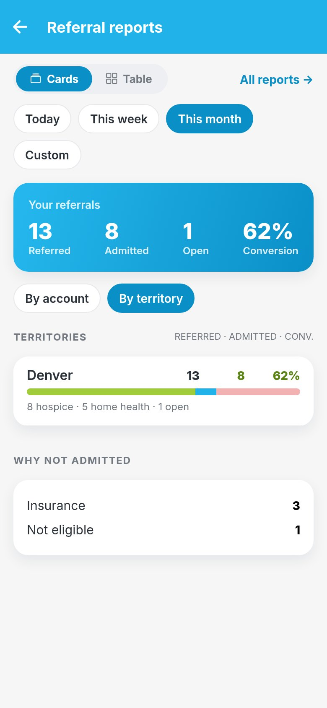
Track every referral to admission
See what's referred, open, admitted and not admitted, and what your conversion rate is this month.
- Status notes. Every move along the pipeline keeps a timeline the team can read.
- Why not admitted. Insurance, eligibility and more, counted up for you.
- Follow-ups with a bell. A red badge shows what's due today and takes you right to it.
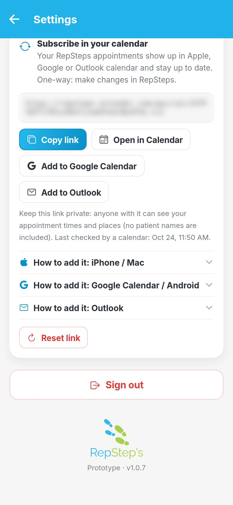
Your notes set up your next step
Type "follow up Tuesday at 2" when you check out and RepSteps offers to make it an appointment. Then it can show up in the calendar you already use.
- Add to my calendar. One tap puts an appointment in your phone's calendar.
- Subscription link. Add it once and every RepSteps appointment appears automatically.
- Notes stay in RepSteps. Synced events show only the place, contact and time.
The rest of the relationship, too
Log every call
Who you called, how it went, and notes. Mention a time and get an appointment suggestion here too.
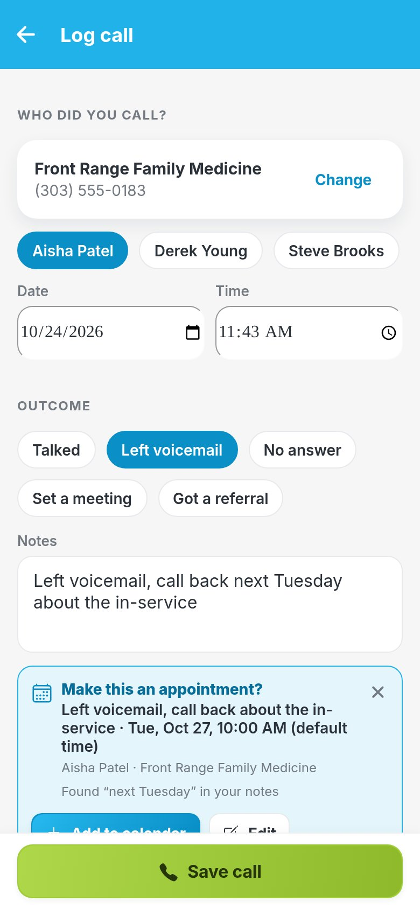
Know each facility
Beds, average census, payer mix, recent referrals, recent calls and gifts this year.
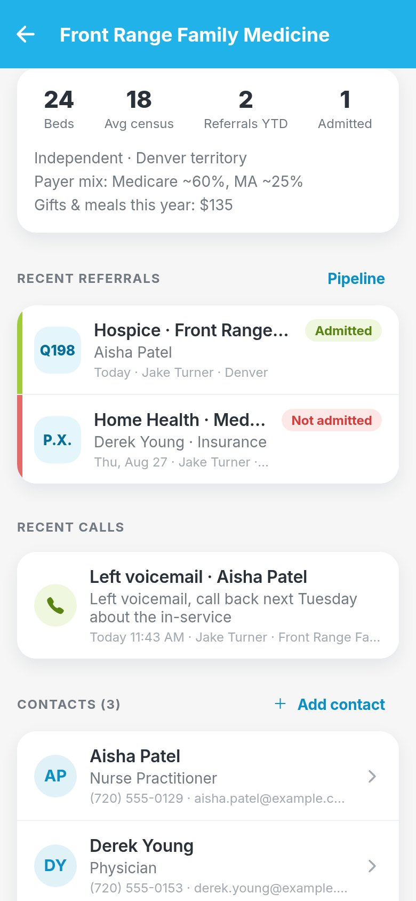
Plan community events
In-services and expos sit on the schedule next to your appointments and show up in reports.
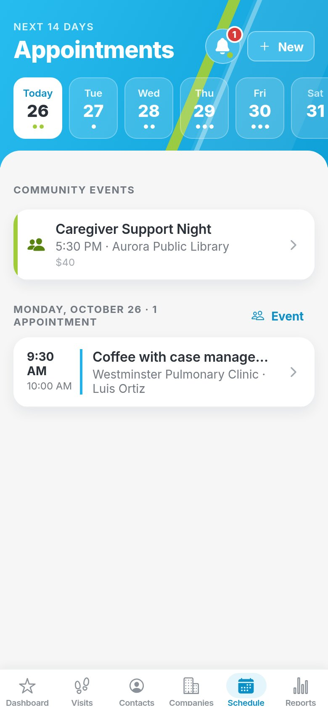
Weekly meetings are a breeze
Everything your reps log rolls up into live reports on the web and on your phone.
- Team goals, live. Hospice and home health progress for each rep and the whole team.
- Every number in one Reports tab. Visits, time on site, referrals, admits, conversion, calls, miles, gifts and events.
- Slice it your way. By rep, account, territory, day, week or month, then export to CSV.
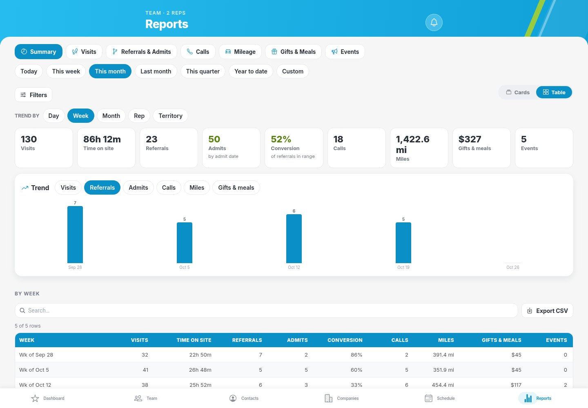
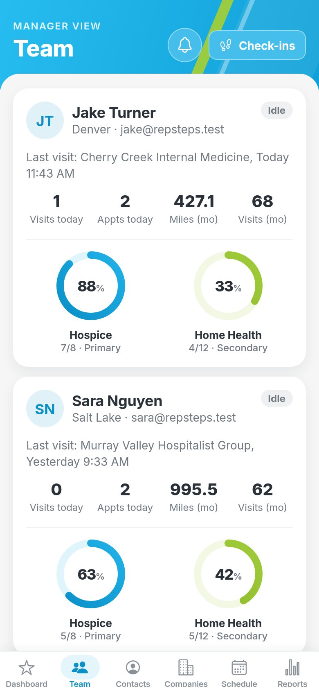
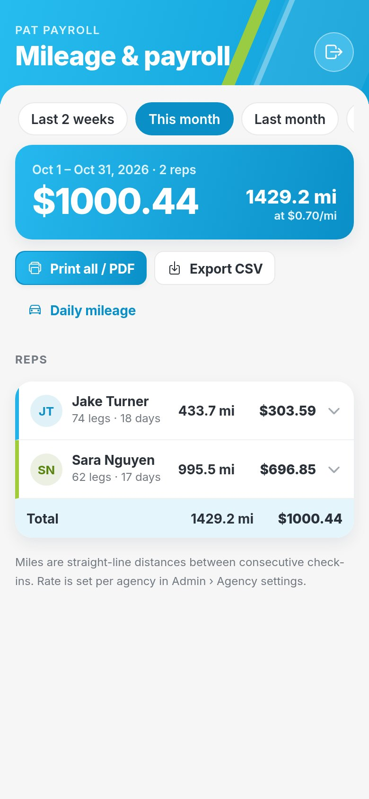
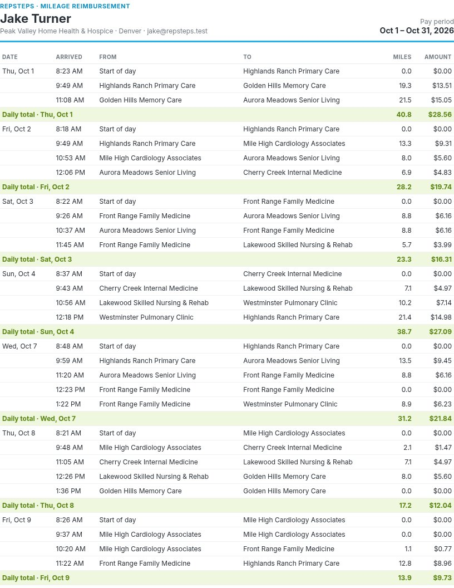
Mileage, ready for payroll
Give payroll its own login. It sees mileage for your agency's reps and nothing else.
- Pick the pay period. Half-month, every two weeks, monthly or a custom range.
- Your rate. Set the mileage rate once per agency in Admin settings.
- Print, sign, attach. A page per rep with signature lines, as a PDF or CSV.
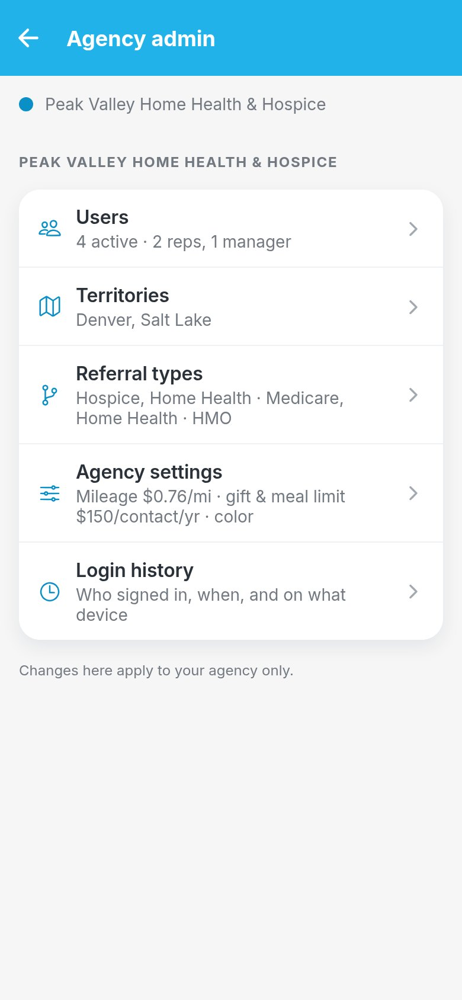
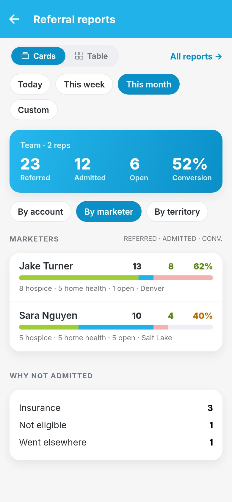
Set up agencies and teams
Run one agency or several. Each one has its own reps, accounts, territories and settings.
- Users and roles. Add people with a one-time password and give each the right access.
- Territories and referral types. Shape RepSteps to how your agency works.
- Login history. See who signed in, and when.
Call or email for a free demo
We'll walk your team through a rep's day, the manager reports and the payroll mileage report, with your own territories in mind.